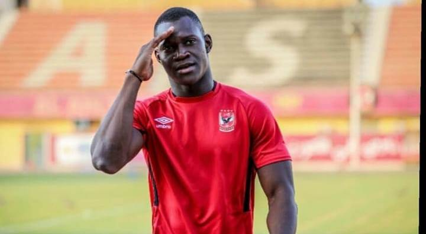

The most admitted story tells that the game was developed in England in the 12th century. In this century, games that resembled football were played on meadows and roads in England. Besides from kicks, the game involved also punches of the ball with the fist. This early form of football was also much more rough and violent than the modern way of playing. An important feature of the forerunners to football was that the games involved plenty of people and took place over large areas in towns (an equivalent was played in Florence from the 16th century where it was called Calcio). The rampage of these games would cause damage on the town and sometimes death. These would be among the reasons for the proclamations against the game that finally was forbidden for several centuries. But the football-like games would return to the streets of London in the 17th century. It would be forbidden again in 1835, but at this stage the game had been established in the public schools. It took, however, long time until the features of today’s football had been taken into practice. For a long time there was no clear distinction between football and rugby. There were also many variations concerning the size of the ball, the number of players and the length of a match. The game was often played in schools and two of the predominant schools were Rugby and Eton. At Rugby the rules included the possibility to take up the ball with the hands and the game we today know as rugby has its origin from here. At Eton on the other hand the ball was played exclusively with the feet and this game can be seen as a close predecessor to the modern football. The game in Rugby was called “the running game” while the game in Eton was called “the dribbling game”. An attempt to create proper rules for the game was done at a meeting in Cambridge in 1848, but a final solution to all questions of rules was not achieved. Another important event in the history of football came about in 1863 in London when the first Football association was formed in England. It was decided that carrying the ball with the hands wasn't allowed. The meeting also resulted in a standardization of the size and weight of the ball. A consequence of the London meeting was that the game was divided into two codes: association football and rugby.
The overflow property specifies whether to clip the content or to add scrollbars when the content of an element is too big.
1
2
3
4
5
6
7
8

